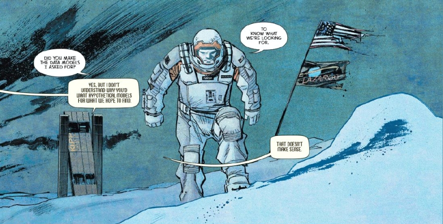

This 7-page one-off special published in Wired magazine, written by Christopher Nolan with Illustrations by Sean Gordon Murphy, charts several days in the life of Dr. Mann, who, prior to the events of the film Interstellar, led one of the one-way NASA’s Lazarus missions, whose goal was to find a habitable planet on the other side of the wormhole. NASA earmarked earlier 3 most promising, potentially habitable planets: Edmunds, Mann and Miller, named after the three astronauts, members of the Lazarus missions, who landed on these distant worlds and surveyed them.
Dr. Mann’s task is to study ‘his’ particular planet, collect as much information about it as possible and send the scientific data back to Earth.
His world is that of a barren frozen landscape and endless white vistas, with temperatures plummeting below -80°C. Dr. Mann hopes to find a solid ground under the surface of the frozen ammonia that covers the whole planet to a depth of many metres, but the data collected from the probe he retrieves reveal that there isn’t any – only more frozen ammonia.
Dr. Mann realises that his only chance to get rescued is to fake the data about ‘his’ planet's habitability and asks his artificially intelligent robotic assistant KIPP to make a hypothetical data model of what is their Lazarus mission hoping to find. KIPP initially argues about this, as he does not understand the logic and purpose of such a pointless task, but after Dr. Mann’s insistence he eventually obliges.
Mann and KIPP have regular fall-outs over the above issue, and the way they should conduct the survey of the planet, and KIPP often dares Mann to turn him off, which is Mann tempted to do, yet never does – after all, on this desolate world, an annoying robotic companion is better than no companion at all.

At last, Dr. Mann disables KIPP and transmits the made-up scientific data back to Earth.
You can read the whole mini-comic here: Absolute Zero